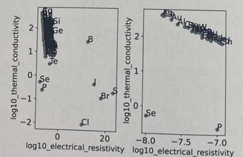
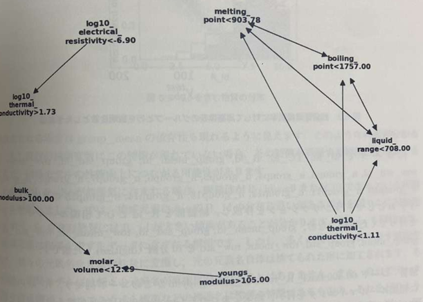
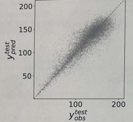
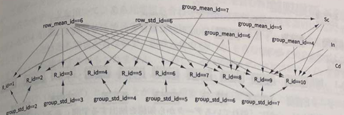
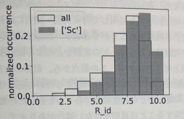

1. 解説
頻出パターンマイニング（アイテムセットマイニング）は， データベースの中から，頻繁に現れるアイテムやその組み合わせを 見つける手法です．
超伝導転移温度(Tc)を例にすると，超伝導体に含まれる元素やTc が基準温度の上か下か
などをそれぞれアイテムとして表し，
{Cu,O, Tc > 30} のようなアイテムセットを作ります．
1つの物質に対応するアイテムの集合をトランザクション
Tᵢ と呼び，物質ごとに含まれるアイテムの数が
異なっていても扱えます．
また，「Xが起こればYも起こる傾向がある」という関係を
相関ルール X ⇒ Y で表します．
ルールを評価する指標には，全トランザクションのうち
Xを満たす割合を表す支持度（support）と，
Xを満たすもののうちYも満たす割合を表す確信度（confidence）
があります．以下のトランザクションの表の例では，{Cu, O} の支持度は
3/6 = 0.6，
{Cu, O} ⇒ Tc > 30 の確信度は
3/3 = 1 です．
この方法により，大量のデータから頻出する組み合わせや， 一部のデータに見られる規則性を探索できます． 構成元素の数が物質ごとに異なる場合にも， 数値の平均や標準偏差だけに頼らず，アイテム同士の組み合わせに 注目できる点が特徴です．
超伝導体とTc
| Tc | 物質 | 圧力 |
|---|---|---|
| Tc<30 | Hg | |
| Tc<30 | Pb | |
| Tc>30 | LaBaCuO | |
| Tc>30 | LaSrCuO | |
| Tc>30 | YBaCuO | |
| Tc>200 | CSH | 高圧 |
超伝導体とTcのトランザクション
| トランザクション | アイテム |
|---|---|
| T1 | Tc<30,Hg |
| T2 | Tc<30,Pb |
| T3 | Tc>30,La,Ba,Cu,O |
| T4 | Tc>30,La,Sr,Cu,O |
| T5 | Tc>30,Y,Ba,Cu,O |
| T6 | Tc>200,C,S,H,高圧 |
2. コードの解説
2.1:使用するライブラリの読み込み
最初に，データの読み込みや加工，数値計算，グラフの描画に 必要なライブラリをインポートします．
import pandas as pd
import numpy as np
import json
import matplotlib.pyplot as plt
%matplotlib inlinepandas：表形式のデータを扱います．numpy：数値計算に使用します．json：JSON形式のデータを読み込みます．matplotlib.pyplot：グラフを描画します．%matplotlib inline：Jupyter Notebook内にグラフを表示します．
2.2:データの読み込み
頻出パターンマイニングに使用するデータは，
JSON形式のファイル
data/atom_transaction.json に保存されています．
with open(
"data/atom_transaction.json", "r"
) as f:
transaction = json.load(f)open()でJSONファイルを読み込みモードで開きます．json.load(f)でファイルの内容をPythonのデータ構造に変換します．- 読み込んだデータは，変数
transactionに格納されます．
500.045.atomicprop_makedata.ipynb
を実行して，JSONファイルを作成しておくことが説明されています．
各元素の物性値を，条件を満たすかどうかを示すアイテムの集合として 表現したデータです．
例えば，次のようなアイテムが含まれます．
liquid_range<708.00molar_volume<12.29X>2.00
これらは，それぞれの物性値が設定された条件を満たしていることを表します．
2.3:トランザクションデータの変換
頻出パターンマイニングを行うために， トランザクションデータを各アイテムの有無を示す表形式に変換します．
from mlxtend.preprocessing import TransactionEncoder
transaction_values = [
v for v in transaction.values()
]
te = TransactionEncoder()
te.fit(transaction_values)
te_ary = te.transform(transaction_values)
df_transaction = pd.DataFrame(
te_ary,
columns=te.columns_
)-
transaction.values()で，各元素に対応するアイテムの集合を取り出します． -
TransactionEncoder()で，トランザクションデータを変換するためのオブジェクトを作成します． -
fit()で，データに含まれるアイテムを学習します． -
transform()で，各トランザクションをアイテムの有無を示す配列に変換します． -
pd.DataFrame()で，変換結果を表形式のデータにします．
| 元素 | アイテムA | アイテムB | アイテムC |
|---|---|---|---|
| 元素1 | 1 | 1 | 0 |
| 元素2 | 0 | 1 | 1 |
| 元素3 | 1 | 0 | 1 |
この表は仕組みを説明するための模式例です． 1はアイテムが存在すること，0は存在しないことを表します．
2.4:頻出アイテムセットの抽出
変換したデータに対してFP-Growthアルゴリズムを適用し， 頻出アイテムセットを抽出します．
from mlxtend.frequent_patterns import fpgrowth
df_freq_items = fpgrowth(
df_transaction,
min_support=0.1,
use_colnames=True
)
df_freq_items.head(10)-
fpgrowth()で，頻出アイテムセットを抽出します． -
min_support=0.1は，支持度が0.1以上のアイテムセットを対象とする設定です． -
use_colnames=Trueを指定すると，列名をアイテム名として出力します． -
head(10)は，結果の先頭10行を表示します．
支持度は，あるアイテムセットを含むトランザクションの割合です．
例えば，全102件のトランザクションのうち，あるアイテムセットが 20件に含まれている場合，支持度は次のようになります．
支持度 = 20 ÷ 102 ≈ 0.196
この場合，支持度は約0.196なので，最小支持度0.1の条件を満たします．
2.5:アソシエーションルールの生成
頻出アイテムセットをもとに，アイテム間の関連性を表す アソシエーションルールを生成します．
from mlxtend.frequent_patterns import association_rules
df_rules = association_rules(
df_freq_items,
metric="confidence",
min_threshold=0.8
)
df_rules["antecedent_len"] = (
df_rules["antecedents"]
.apply(lambda x: len(x))
)
df = df_rules[
df_rules["antecedent_len"] == 1
]
df = df.sort_values(
by="support",
ascending=False
).reset_index(drop=True)
df[
[
"antecedents",
"consequents",
"antecedent support",
"confidence"
]
].head(10)-
association_rules()でアソシエーションルールを生成します． -
metric="confidence"は，ルールの評価指標として確信度を指定しています． -
min_threshold=0.8により，確信度0.8以上のルールを抽出します． -
antecedent_lenには，前件に含まれるアイテム数を格納します． -
antecedent_len == 1によって，前件が1つのアイテムからなるルールに絞ります． -
sort_values()で支持度の降順に並べ替えます． - 最後に，指定した4列の先頭10行を表示します．
例えば，次のようなルールを考えます．
アイテムA → アイテムB
- 前件（antecedents）： ルールの左側にある条件．ここではアイテムAです．
- 後件（consequents）： ルールの右側にある条件．ここではアイテムBです．
- 前件支持度： アイテムAを含むトランザクションの割合です．
- 確信度（confidence）： アイテムAを含むトランザクションのうち，アイテムBも含む割合です．
2.6:アソシエーションルールの結果を解釈する
抽出されたルールから，元素の物性値の間に見られる関連性を調べます． 本資料では，例えば次のようなルールが示されています．
| 前件 | 後件 | 意味 |
|---|---|---|
melting_point<903.78 |
boiling_point<1757.00 |
融点が条件を満たす場合に，沸点も条件を満たす傾向 |
liquid_range<708.00 |
boiling_point<1757.00 |
液体温度範囲が条件を満たす場合に，沸点も条件を満たす傾向 |
boiling_point<1757.00 |
melting_point<903.78 |
沸点が条件を満たす場合に，融点も条件を満たす傾向 |
bulk_modulus>100.00 |
molar_volume<12.29 |
体積弾性率とモル体積の間に関連が見られる |
アソシエーションルールは，データ中で同時に現れる条件の組み合わせを示します． 物性値の条件が同時に成立しやすいことを確認できますが， その関係が成立する物理的な理由まで直接説明するものではありません．
2.7:物性データの読み込みと欠損値の除去
次に，物性値を可視化するため，CSVファイルからデータを読み込みます． ここでは，電気抵抗率と熱伝導率を使用します．
df_atom_prop = pd.read_csv(
"data/atomicprop.csv",
index_col=[0]
).reset_index()
xlabel = "log10_electrical_resistivity"
ylabel = "log10_thermal_conductivity"
df_atom_prop = df_atom_prop[
[xlabel, ylabel, "index"]
].dropna()
df_atom_prop.reset_index(drop=True)-
pd.read_csv()でCSVファイルを読み込みます． -
xlabelに横軸の物性値，ylabelに縦軸の物性値を指定します． -
dropna()で，選択した列に欠損値を含む行を取り除きます． -
reset_index(drop=True)は，インデックスを振り直すための処理です．
df_atom_prop.reset_index(drop=True)は，
戻り値を変数に代入していないため，通常は
df_atom_prop自体のインデックスは更新されません．
インデックスを更新した結果を保持する場合は，
df_atom_prop = df_atom_prop.reset_index(drop=True)
とします．
2.8:条件を満たす元素の抽出
電気抵抗率が一定の条件を満たす元素を抽出し， 該当する元素を確認します．
condition = "log10_electrical_resistivity<-6.9"
df_select = df_atom_prop.query(condition)
print(df_select["index"].values)
iselect = df_select.index.values
x = df_atom_prop[xlabel].values
y = df_atom_prop[ylabel].values
from itemsetmining_misc import plot_atomicprop
plot_atomicprop(df_atom_prop,df_select,xlabel,ylabel)-
conditionに，電気抵抗率の対数値が-6.9未満という条件を文字列で指定します． -
query(condition)で，その条件を満たす行を抽出します． -
print()で，該当する元素の名前を表示します． -
xとyに，横軸と縦軸に使用する物性値を格納します． -
plot_atomicprop()で，全元素のデータと抽出した元素のデータを可視化します．

全元素の分布と，電気抵抗率の条件を満たす元素の分布を比較します． この図は，電気抵抗率と熱伝導率の関係を示しており，右図は電気抵抗率の常用対数が-6.9より小さいもののみを表示しています．この図で熱伝導率が大きい且つ線上に表れているのは金属元素であり，logスケールの電気抵抗率と熱伝導率はほぼ比例関係の高い相関がある事が分かります．
2.9:コード全体の処理の流れ
| 順番 | 処理 | 目的 |
|---|---|---|
| 1 | ライブラリの読み込み | データ処理に必要な機能を準備する |
| 2 | JSONデータの読み込み | 元素ごとのトランザクションを取得する |
| 3 | データの変換 | アイテムの有無を表形式にする |
| 4 | 頻出アイテムセットの抽出 | 頻繁に現れるアイテムの組み合わせを探す |
| 5 | ルールの生成 | アイテム間の関連性を抽出する |
| 6 | 結果の解釈 | 物性値の条件間に見られる関連を調べる |
| 7 | 可視化 | 抽出した元素の物性値を比較する |
3. 演習問題
頻出パターンマイニングとアソシエーションルールを実際のデータに適用し，抽出された規則を解釈する方法を2つの問題を通して説明します．
| 問題 | 主な内容 | 使用する手法 |
|---|---|---|
| 問題1 | アソシエーションルールの抽出と可視化 | 頻出パターンマイニング，networkx |
| 問題2 | 残留電気抵抗率の予測と規則の解釈 | ランダムフォレスト回帰，頻出パターンマイニング |
問題1：アソシエーションルールの抽出と可視化
500.050.text.explanation.ipynb の説明を
LLM（大規模言語モデル）に依頼し，同等の機能を持つコードを
生成し，実行してください．
この例では，既に作成された頻出アイテムセットを使い， アソシエーションルールを抽出して，規則同士の関係を ネットワーク図として可視化します．
1. 頻出アイテムセットからルールを生成する
ここでは既に用意されている
frequent_itemsets を入力として，
アソシエーションルールを生成します．
rules = association_rules(
frequent_itemsets,
metric="support",
min_threshold=0.1
)-
association_rules()は， 頻出アイテムセットからアソシエーションルールを生成します． -
frequent_itemsetsは，入力となる頻出アイテムセットです． -
metric="support"は，ルールの評価指標として支持度を指定します． -
min_threshold=0.1は，指定した指標のしきい値を0.1に設定します．
association_rules のインポートと，
frequent_itemsets の事前準備が必要です．
2. 評価指標を選ぶ
アソシエーションルールの抽出では，支持度や確信度などを 評価指標として利用できます． どの指標を指定するかによって，抽出されるルールが変わります．
| 指標 | 意味 |
|---|---|
| 支持度（support） | 前件と後件の両方を含むデータの割合 |
| 確信度（confidence） | 前件を含むデータのうち，後件も含むデータの割合 |
ここでは，支持度を評価指標として指定し， しきい値を0.1に設定する例が示されています．
一方，前のコード説明で扱った確信度0.8以上という条件は， 確信度を評価指標として指定する場合の設定です． 両者は異なる条件です．
3. ルールを並べ替える
生成されたルールを支持度の降順に並べ替え， 上位15件を可視化します．
sorted_rules = rules.sort_values(
by="support",
ascending=False
)
sorted_rules = sorted_rules.head(15)-
sort_values()で，支持度を基準に並べ替えます． -
ascending=Falseは，値の大きい順に並べる設定です． -
head(15)で，先頭の15件を取り出します．
4. ネットワーク図で可視化する
networkx を用いて，
前件と後件の関係を矢印で結ぶ図を作成します．
ノードはアイテムや条件を，矢印は前件から後件への アソシエーションルールを表します．

上位15位までの相関ルール5. 図から読み取れること
この図から，複数の規則のまとまりが現れることが読み取れます． 例えば，次のような物性値の条件が関連しています．
- 電気抵抗率が小さく，熱伝導率が大きいという条件
- 液体温度範囲や沸点，融点に関する条件
- 体積弾性率，ヤング率，モル体積に関する条件
矢印の向きはルールの前件と後件の関係を示します． 複数の矢印が同じ条件につながっている場合， その条件を含む複数の規則が抽出されていることが分かります．
問題2：残留電気抵抗率の予測と規則の分析
hea4_phys.csv を用いて，
残留電気抵抗率 R を予測した．
同じデータを用いて説明変数をアイテム化してトランザクションを作成し，
アソシエーションルールを抽出してください．
1. ランダムフォレスト回帰による予測
決定係数R2test=0.76の回帰性能を持つ予測モデルは， テストデータを20%としてランダムフォレスト回帰を行うことで得られています．

残留電気抵抗率に対する予測値
横軸はテストデータの観測値，縦軸はモデルによる予測値です． 点が対角線に近いほど，観測値と予測値が近いことを示します．
R2test=0.76 は，このテストデータにおいて モデルが目的変数の変動をどの程度説明できているかを表す指標です．
2. 使用するデータと変数
データファイルは {ROOT}/data/hea4_phys.csv です．
| 変数 | 役割 |
|---|---|
R |
目的変数：残留電気抵抗率 |
group_mean |
説明変数：グループ平均に関する量 |
group_std |
説明変数：グループ標準偏差に関する量 |
row_mean |
説明変数：行平均に関する量 |
row_std |
説明変数：行標準偏差に関する量 |
group_mean，
group_std，row_mean，
row_std は10分割（digitize）した値を使用しています．
ここでの group_mean_id などのIDは，
平均値や標準偏差そのものではなく，分割した区間を表す値です．
3. 目的変数と説明変数をアイテム化する
次に，同じデータを使って頻出パターンマイニングを行います．
ここでは，目的変数 R に加え，
次の変数に対応するIDをアイテムとして使用しています．
R_idgroup_mean_idgroup_std_idrow_mean_idrow_std_idn_group3からn_group15などの変数
各データ行をトランザクションとして扱い， その中に含まれるアイテムの組み合わせを調べます．
| 元の情報 | アイテムの例 |
|---|---|
| 残留電気抵抗率の区分 | R_id=6 |
| グループ平均の区分 | group_mean_id=4 |
| グループ標準偏差の区分 | group_std_id=7 |
これらはアイテム化の例です． 実際の組み合わせは元のデータに含まれる値によって決まります．
4. アソシエーションルールを抽出する
アイテム化したデータに対して頻出パターンマイニングを実行し， 残留電気抵抗率の区分と説明変数の区分との間に見られる ルールを抽出します．
また，抽出されたルールを前件と後件の関係として整理し， Cytoscapeを用いて可視化します．

10分割した残留電気抵抗率に対する規則
この図から，抽出された規則について，残留電気抵抗率の区分
R_id と説明変数の区分との関係を考察します．
-
R_idの値が小さい領域では， 前件にrow_mean_idやrow_std_idが含まれる規則が示されています． -
R_idが大きくなる場合には，group_mean_idに関係する規則も現れます． -
R_idが6から10の範囲では，group_std_id=7が共通して現れる規則があります．
5. Scを含む物質の分布を比較する
構成元素にScを含む物質と，全体の物質について，
R_id の分布を比較します．

Scを含む物質の分布
この図から，Scを含む物質には
R_id が大きい傾向があると分かります．
また，CdやInについても，前件部に含まれる場合に
R_id の分布に違いが見られます．
-
横軸：10分割された残留電気抵抗率の区分
R_id - 縦軸：正規化された出現頻度
- 全体とScを含む物質の分布を比較し， どの区分にデータが多いかを確認します．
6. 頻出パターンマイニングを利用する意義
構成元素の情報を単純に数値特徴量へ変換するだけでは， 元素名や物質の特徴がそのまま説明変数に反映されるとは限りません．
頻出パターンマイニングを用いることで，回帰モデルだけでは 直接読み取りにくい，特定の元素や説明変数の区分と 目的変数との関連を調べることができます．
まとめ
| 観点 | 問題1 | 問題2 |
|---|---|---|
| 入力データ | 頻出アイテムセット | 物性データをアイテム化したもの |
| 主な処理 | ルールの抽出・並べ替え・可視化 | 回帰予測・ルール抽出・分布の比較 |
| 可視化 | ルールのネットワーク図 | 予測値の散布図，ルール図，ヒストグラム |
- 頻出アイテムセットからアソシエーションルールを生成できる．
- 支持度などの評価指標やしきい値によって，抽出されるルールは変わる．
- ネットワーク図やヒストグラムによって，抽出された規則の特徴を把握できる．
- 規則はデータ中の関連を示すものであり，それだけで因果関係を証明するものではない．